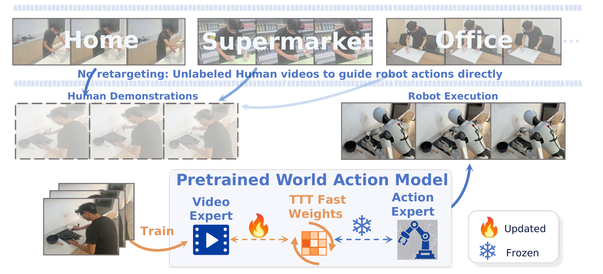
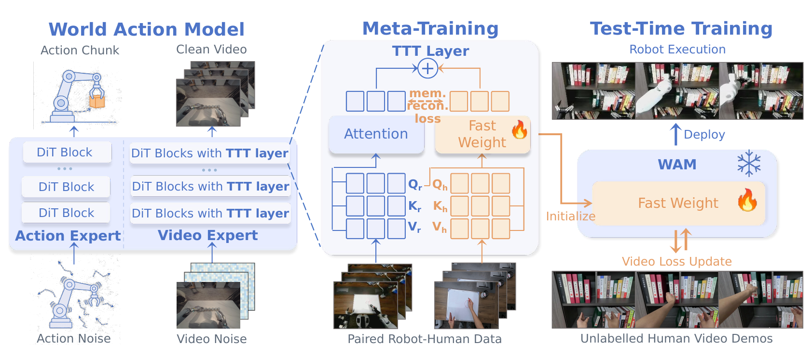
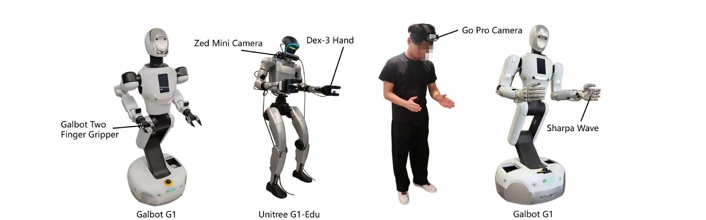
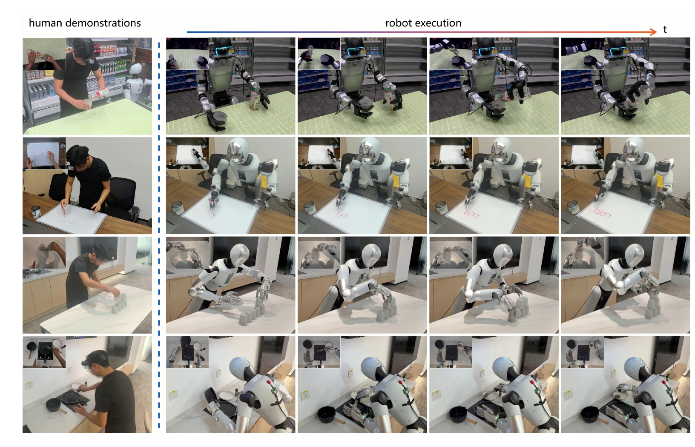
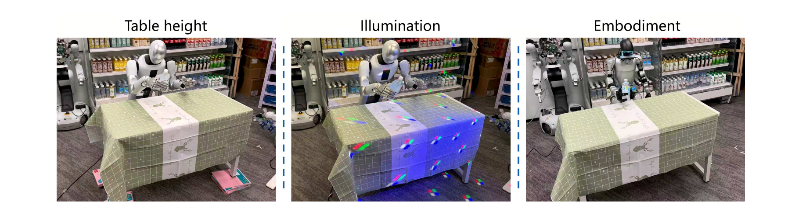

总览：机器人部署后，怎么"现场教"它一个新花样？
机器人基础模型训好、部署了，然后用户想让它换一种方式做事——换个物体、换个顺序、换个用户偏好。今天的选项都很痛：要么重新采机器人演示 + 微调整个模型（贵，还会灾难性遗忘），要么靠语言指令 / 目标图这种窄接口（表达不了"手法"）。最自然的接口其实是：人直接做一遍给它看。WAM-TTT 的答案：拿一段无标注的人类第一视角视频，在部署现场做几步测试时训练——通过"预测这段视频的下一帧"这个自监督任务，把演示吸收进模型里一小块专门预留的"快权重"记忆，整个预训练模型一个参数都不动。机器人看完人玩一遍（watching human play），行为就被"转向"（steered）了。
论文五问速答
| ① 背景：问题为什么难 | 机器人基础模型（RFM）把知识都固化在预训练权重里，部署后只剩语言指令、目标图、短观测历史这几个窄条件接口。想指定"新任务变体 / 用户偏好的做法"，通常只能重新采集机器人演示 + 微调全模型——贵、慢、还可能把预训练能力忘掉（catastrophic forgetting）（§1, p.2）。 |
| ② 站在什么工作上 | 骨干 = LDA（同团队的预训练 WAM：Qwen3-VL-4B VLM + DiT-L MMDiT，video expert 和 action expert 双流联合注意力）；TTT 机制承自 TTT 层 / fast-weight 谱系（Sun et al. TTT-RNN、Titans、Spatial-TTT——逐帧把上下文"写"进小 MLP 权重）；对比基线含 π₀.₅ 和 EgoScale。 |
| ③ 前人卡在哪 | 用人类视频教机器人的三条老路各有死法：路线 A · co-training / 微调（EgoMimic / EgoDex / EgoScale 系）：要手部姿态、3D 运动或重定向轨迹等额外标注——噪声大、成本高；微调还伤泛化。实测 WAM-Cotrain 把域内成绩从 50.2 拉到 29.8（附录 C）。路线 B · in-context 条件化（MimicDroid 系）：把人类视频当上下文 token 喂——要在预训练时学会这个能力，上下文随演示积累爆炸；场景一变直接崩（WAM-ICL：48.4 → 7.1）。路线 C · 重定向成伪动作：单目手部姿态估计噪声大，E.6 实测加了反而 −43.4 分。 |
| ④ 他们的 insight | 别人都把人类视频当"要模仿的轨迹"（想方设法转成动作/姿态），WAM-TTT 说：把它当"部署时的记忆"。人类视频不转成任何动作——用自监督视频预测把它写进 WAM 视频侧的 TTT 快权重；因为 WAM 本来就把视觉动态和动作联合建模，视频侧的记忆会顺着共享的视觉-动作表征自动"转向"动作生成。前提是一次 meta-training：用成对人-机数据把"人类 Key/Value ↔ 机器人 Query"的读出接口预先校准好。 |
| ⑤ 最后效果 | 3 个本体（Unitree G1 / Galbot 夹爪 / Galbot 灵巧手）× 9 个操作任务。未见过的家庭场景（New）：平均进度 46.2%，比不用人类视频的 LDA 骨干 +13.7 分、比 co-training +20.9、比 EgoScale +31.2、比 π₀.₅ +31.4、比 ICL +39.1（Table 1）。域内（Orig）也是第一（61.1%），且 Orig→New 留存率 0.76 全场最高——既没牺牲域内、又最抗场景漂移。训练开销：8×H800、100k meta 步。 |
数据集：一份"人机对拍"的双视角数据
| 数据 | 规模 | 是什么 | 用在哪 |
|---|---|---|---|
| LDA 预训练语料 | （继承） | LDA-1B 的大规模具身数据（见 LDA 论文），本文直接继承预训练权重，不重训 | 阶段 0 · WAM 底座 |
| 成对人-机演示 | 2,286 对 episode · 9 任务 | Unitree G1（600，三指 Dex-3 手）+ Galbot 夹爪（544）+ Galbot sharpa 灵巧手（1,142，单手 22-DoF）。机器人侧：标准化 cubicle 里遥操作采集；人类侧：GoPro 第一视角、直接在真实家庭场景录（就是之后的 New 评测场景）、零标注——没有手部姿态、没有关节角、没有重定向（§B, p.16） | 阶段 1 · meta-training（按相位对齐配对） |
| 部署现场人类视频 | 每任务一小批 | 目标场景里现场录的无标注人类演示——测试时唯一的输入信号 | 阶段 2 · test-time training（只更新快权重） |
预训练 WAM 像一个熟练工，手艺（慢权重）已经定型。来了新活儿，三种教法：重新送去培训（微调——贵，还可能把老手艺练歪）；在他耳边实时念操作手册（ICL——他得边听边干，手册越厚越记不住）；WAM-TTT 是让他看一遍你做，然后自己在工位上贴一张便利贴（快权重记忆）——手艺没动，看新便利贴干新活，撕掉便利贴就恢复原样，换个活儿换张贴纸。
Steering：不是"学新任务"，是"部署后现场转向"
§01 说了要"把人类视频当记忆"，但先把问题本身立住：steering（转向）和平时说的 fine-tuning 有什么区别？steering 要求的是部署时、低成本、可逆、可复用地改变模型行为——用户今天教一个手法，明天换个任务不能互相污染，也不能把基础模型改坏。这一节看 Fig.1 的全局图，理解 WAM-TTT 给出的部署形态：家庭、超市、办公室——人在哪演示，机器人就在哪学，学的痕迹只存在快权重里。

三条老路 vs 这条新路
| 路线 | 人类视频被当成 | 代价 / 死法 | 本文实测 |
|---|---|---|---|
| co-training / 微调 | 训练数据（常配姿态/重定向标注） | 标注贵且噪；微调伤泛化、遗忘 | WAM-Cotrain 域内 29.8，反而低于不用人类数据的 LDA（50.2） |
| in-context 条件化 | 上下文 token | 要预训练时专门学；上下文长度爆炸；场景一变就崩 | WAM-ICL 域内 48.4 → 换场景 7.1（留存 15%） |
| 重定向伪动作 | 动作监督（MANO + retargeter） | 单目姿态噪声大；gripper 开合信号要手工造 | 加上后 4 任务平均 72.3 → 28.9（E.6） |
| WAM-TTT | 测试时记忆（快权重） | 需要一次 meta-training 校准接口 | New 46.2 全场第一 · 留存 0.76 全场最高 |
展开原文 · 记忆 vs 轨迹的立场句
"Rather than treating human videos as trajectories to imitate, WAM-TTT uses them as deployment-time memory learned through video prediction."
架构：冻结的 WAM，视频流上外挂一排"可写内存条"
§02 定了目标：记忆要能写、模型不能动。这一节看它落在哪：底座是 LDA——每个 diffusion transformer block 里有视频专家（处理视觉 latent token）和动作专家（处理动作 token）两条流，靠联合注意力互通。WAM-TTT 的全部改动就一件事：在视频专家的每个 block 上外挂一条 TTT 残差支路——一个小 MLP（快权重 $f_W$）加四个投影（慢权重 $\theta_{K,V,Q,O}$）。动作专家一根毛都不碰。先分清两种权重：慢权重训练时由优化器更新、部署时冻结（是"读写头"）；快权重在一次前向里就能被内环 SGD 更新好几次（是"内存条"）。

两条公式：残差外挂 + 读出
- $\hat{\mathbf{z}}^{(\ell+1)}$
- 第 $\ell$ 个 LDA block 对视频 token 的原始输出（TTT 加入前的值）——预训练行为的基线
- $\Delta\mathbf{z}_{\mathrm{TTT}}^{(\ell)}$
- TTT 支路的残差修正——记忆对视频流的全部影响就通过这一项注入。残差设计意味着：快权重清零时模型精确退回预训练行为
- $\mathbf{x}^{(\ell+1)} = \hat{\mathbf{x}}^{(\ell+1)}$
- 动作 token 不加任何修正——动作专家的输出只通过后续 block 的联合注意力间接感受到视频侧的变化
- $\theta_Q^{(\ell)}(\mathbf{z}^{(\ell)})$
- 当前视频 token 经慢投影变成 Query——"我现在看到这个画面，记忆里有什么相关的？"
- $f_{W^{(\ell)}}(\cdot)$
- 快权重 MLP：被训练成"给 Key 返回 Value"的参数化记忆。查询它 ≈ 在人类演示的 K/V 集合上做一次 attention 读出（附录 A 给了线性情形的精确等价证明）
- $\theta_O^{(\ell)}$
- 输出慢投影：把读出的 $d{=}48$ 维记忆值映射回 LDA 隐层维度（1536），作为残差加回
正常 cross-attention 要把人类视频的所有 K/V 存成显式缓存——演示越长缓存越大，每次测试时更新还要重算。TTT 层把整个 K/V 集合"压缩"成一个小 MLP 的权重：写入 = 几步 SGD（让 $f_W(K)\approx V$），读出 = 一次前向。附录 A 的关键结果：线性情形下最优解 $W^* = V_h^\top K_h(K_h^\top K_h)^{-1}$，读出 $f_{W^*}(Q_r) \propto \sum_i (k_i^\top Q_r)\,v_i$——正是 softmax-free 的线性注意力。所以记忆重建 loss 不是随手加的正则，它是"这块内存要表现得像 cross-attention"的变分定义。
Meta-training：先彩排一遍"写记忆"，教会读写头听懂人话
§03 装好了内存条（快权重）和读写头（慢投影），但两个致命问题还没答：① 视频侧的记忆凭什么对动作生成有用？② 人和机器人视角、形态差那么多，机器人的 Query 凭什么能"读懂"人类的 Key/Value？答案是一场彩排——元训练：拿 2,286 对"同一任务、人做一遍 + 机器人做一遍"的数据，内环模拟部署（在人类视频上做几步 SGD 写记忆），外环用机器人侧的真实任务 loss 评分，并把梯度穿透内环传回慢参数。直白说：外环在优化的不是"模型现在多好"，而是"模型看完人类演示、写完记忆之后有多好"——这正是 meta-learning 的定义。
第一步：人机数据怎么"对上表"
人做一遍 8 秒、机器人做一遍 40 秒，帧怎么配对？按归一化相位：机器人第 $t$ 帧的相位 $\phi = t/T_r$，去人类视频里取相位最近的帧（§3.2, p.5）。假设是两边的任务阶段分布相同（都是"伸手→抓→移→放"的同一节奏）——这也是论文自认的第一条局限：配对错位会直接污染对齐信号。
第二步：记忆重建 loss——"写入"的定义
- $\mathbf{K}_h^{(\ell)} = \theta_K^{(\ell)}(\mathbf{h}_\phi^{(\ell)})$，$\mathbf{V}_h^{(\ell)} = \theta_V^{(\ell)}(\mathbf{h}_\phi^{(\ell)})$
- 相位同步的人类帧 token 经慢投影得到的 Key 和 Value——要写进记忆的内容
- $f_{W_i}(\mathbf{K}_h) \approx \mathbf{V}_h$
- 快权重的本职工作：看到人类 Key，还原对应 Value。这就是"记住了"的可操作定义——附录 A 证明线性情形下它的最优解精确等价于对人类 K/V 做线性 cross-attention
- $\frac{1}{BL_hd}$
- 按 batch × 序列长 × 维度归一化成逐元素 MSE——loss 量级不随演示长度变化
第三步：内环写记忆（模拟部署）
- $\mathcal{L}_{\mathrm{vg}}^{\mathrm{human}}(\mathbf{u}_h; \cdots)$
- 标准 LDA 视频预测（生成）loss，作用在人类视频片段 $\mathbf{u}_h$ 上——因为 TTT 残差在每个 block 改写视频流，这个 loss 对 $W$ 有梯度
- $\lambda$
- 记忆重建项的权重（$4\times10^{-2}$，Table B.1）——视频预测是主信号，KVM 是结构化的"写入格式"约束
- $\eta$
- 内环学习率：meta-training 时 0.1、测试时 0.01
- 关键性质
- 两项 loss 都只依赖人类侧——不需要机器人动作。所以同一套内环在部署时可以原封不动地跑（§3.2 末, p.4）
第四步：外环评分（穿透内环的反向传播）
- $\mathcal{L}_{\mathrm{WAM}}^{\mathrm{robot}}$
- LDA 原版多任务 loss = 机器人视频 latent 的扩散目标 + 机器人动作块的扩散目标——动作质量在这里被考核
- 梯度流向
- 反向传播穿过 TTT 残差和整个内环更新（Spatial-TTT 式的可微内环），更新三样慢参数：WAM 主干 $\Theta_{\mathrm{WAM}}$、TTT 慢投影 $\theta_{\{K,V,Q,O\}}$、快权重初始化 $W_{\mathrm{init}}$
- 用完即弃
- 每个训练样本适配出的快权重 $W_N$ 用完就丢，下个样本从 $W_{\mathrm{init}}$ 重新写——保证学到的是"通用的写入-读出协议"，不是某段演示的死记
内环 = 学员赛前热身（看人类演示、快速把要点记在小本上）；外环 = 教练看学员热身后的比赛成绩（机器人任务 loss），回头修改的是热身流程本身（慢投影怎么提 Key/Value/Query、小本的初始格式 W_init）。练一万次之后，学员拿到任何新演示，按这套流程记一遍笔记，上场就能用——尽管演示者（人）和上场者（机器人）根本不是同一副身体。
部署：和彩排一模一样，只是这次全场冻结、只写记忆
§04 的彩排结束，现在正式上场。部署协议的美感在于和 meta-training 的内环完全同构：同样的目标函数、同样的 SGD 形式、同样的步数预算——唯一的区别是这次没有外环：WAM、慢投影、W_init 全部冻结，只有快权重在动。训练怎么彩排的，部署就怎么演——没有 train-test 协议错位。
- $\mathcal{B}_h$
- 部署现场录的一小批无标注人类视频——测试时唯一的新信息源
- 冻结清单
- $\Theta_{\mathrm{WAM}}$（主干+动作专家）、$\theta_{\mathrm{TTT}}$（慢投影）、$W_{\mathrm{init}}$——全部不动；只有 $W$ 按 Eq.8 更新
- $W_N$ 固定后 rollout
- 适配完成的快权重在整个任务执行期间保持固定（Eq.9）——执行时零额外开销，且同一份 $W_N$ 可以复用于同任务的多次 rollout（reusable steering）
超参表（Table B.1, p.16）里最扎眼的一行：内环 SGD 迭代数 N = 1（meta-training 和测试时相同），测试时内环学习率 0.01。也就是说"把演示写进记忆"就是一步梯度——不是漫长的在线微调。这可行的原因正是 meta-training：W_init 和慢投影被训练得"一步就能写好"。整个适配的成本 ≈ 在人类视频批上做一次前向 + 一次反向。
训练开销一览（Table B.1）
| WAM 底座 | LDA（Qwen3-VL-4B-Instruct VLM + DiT-L MMDiT 动作头），16 blocks · 隐层 1536 · 32 heads |
| TTT 层规模 | head 维度 48 · 快权重 MLP 隐层 128——相对 1B+ 的底座是零头级的可写区 |
| 内环 | N=1 步 SGD · η = 0.1（meta）/ 0.01（test）· λ = 4×10⁻² |
| 外环 | AdamW · LR 1×10⁻⁴（动作头）/ 1×10⁻⁵（VLM 接口）· 100k 步 · 全局 batch 128 |
| 硬件 | 8× NVIDIA H800 · DeepSpeed ZeRO-2 |
实验：3 副身体、9 个任务、两种场景的验收
方法讲完，验收两个主张：① 人类视频当记忆，比当训练数据 / 当上下文都好；② 好处能扛住真实场景漂移。评测设计里最关键的一对是 Orig vs New：Orig 在采集机器人数据的标准化 cubicle 里测（域内），New 把机器人搬进从未见过的家庭场景——灯光、桌高、物体实例同时全变（联合 OOD）。而人类演示视频本来就是在家庭场景录的，这让 New 设置正好考"从人类视频里取用现场知识"的能力。指标是 progress（部分得分制：每任务拆成加权里程碑，附录 D 给了全部 rubric），每格 25 次试验。

主结果（New · 未见家庭场景 · Table 1 重建）
| 方法 | 人类视频用法 | 9 任务平均 progress | vs WAM-TTT |
|---|---|---|---|
| π₀.₅ | 不用（VLA 基线） | 14.8 | −31.4 |
| LDA（骨干） | 不用 | 32.5 | −13.7 |
| EgoScale | 预训练语料 | 15.0 | −31.2 |
| WAM-Cotrain | co-training 数据 | 25.3 | −20.9 |
| WAM-ICL | 上下文 token | 7.1 | −39.1 |
| WAM-TTT | 测试时快权重记忆 | 46.2 | 9 任务赢 7 平 1 |
唯一输掉的任务是 Stamp Paper（8.3 vs LDA 33.3）：盖章位姿在几何上极紧，家庭场景的扰动破坏了一种人类视频肉眼看不出、也就纠正不了的对齐——诚实地标出了"看演示"这个接口的信息上限（§4.2, p.7）。
展开原文 · 对设计假设最强的一条证据
"The gap against WAM-ICL is the strongest piece of evidence for the design hypothesis: feeding the same human videos as in-context tokens fails to transfer skill to unseen home environments, whereas absorbing them as fast-weight memory does."
Orig → New：谁的人类数据红利能扛住场景漂移
| 方法 | Orig（域内） | New（家庭） | 留存率 New/Orig |
|---|---|---|---|
| WAM-TTT | 61.1 | 46.2 | 0.76 |
| WAM-Cotrain | 29.8（被人类数据拖垮） | 25.3 | 0.85* |
| LDA | 50.2 | 32.5 | 0.65 |
| EgoScale | 30.1 | 15.0 | 0.50 |
| π₀.₅ | 31.8 | 14.8 | 0.47 |
| WAM-ICL | 48.4 | 7.1 | 0.15（灾难性崩塌） |
三个读数（附录 C, p.17-18）：① WAM-ICL 的 0.15 是全文最响的警钟——把人类视频摆在上下文里，场景统计一变直接崩；② WAM-Cotrain 的 0.85* 是假象——起点（29.8）已经被 co-training 拖到比不用人类数据还低，"留存率高"只因没什么可失去的；③ WAM-TTT 唯一做到"域内最高 + 留存最高"——快权重只改人→机记忆，LDA 的预训练视觉推理原样保留。

消融：五个反事实，把每个设计钉死
主结果证明了"记忆路线"赢，但赢的到底是哪个零件？这一节按"如果不这样做会怎样"过五个反事实：不用 TTT 结构（换 LoRA）、不做 meta-training、不加记忆重建 loss、改变人机数据配比、给人类视频强加伪动作。每一个都对应一条曾经的"看似合理的替代方案"。
反事实 ① ~ ③：协议消融（Table 2 · Table Bussing / Swap Place）
| 变体 | Table Bussing | Swap Place | 说明 |
|---|---|---|---|
| WAM-TTT（完整） | 100.0 | 88.9 | — |
| WAM-LoRA（换成 LoRA 适配） | 30.0 | 0.0 | 同样测试时更新参数，但用通用低秩适配替代 TTT 记忆结构——提升不是"随便调点参数"就有的，结构必须是被 meta 校准过的 K/V 记忆 |
| w/o Meta-Training | 9.0 | 0.0 | 跳过彩排直接测试时写记忆——接近全灭。没校准的读写头，机器人 Query 读不懂人类 K/V |
| w/o Memory Recon. | 66.7 | 72.0 | 去掉 L_KVM、只留视频预测——还能用但掉一截：结构化的"写入格式"约束有真实贡献 |
| w/o TTT（冻结 WAM 裸测） | 40.0 | 74.1 | 完全不看人类视频的下限——量出"看演示"本身值多少分 |
反事实 ④：数据配比——人类数据能 1:1 顶替机器人数据（E.4）
| (机器人, 人类) / 任务 | 3 任务平均 | 读数 |
|---|---|---|
| (100, 0) | 59.5 | 无人类数据基线 |
| (10, 190) | 51.4 | 机器人数据砍到 10 条 → 掉——人类数据是替代品不是免费午餐，动作接地必须有底线 |
| (100, 100) 部署配置 | 74.1 | 加 100 条人类演示 = +14.6 分，而人类演示几乎零成本 |
| (200, 0) | 73.7 | 同预算全换机器人数据 ≈ 持平 (100,100)——1 条人类演示 ≈ 1 条遥操作演示，但成本差一个量级 |
| (100, 200) | 73.3 | 人类侧继续加量已饱和 |
反事实 ⑤：给人类视频强加伪动作 → 均匀变差（E.6）
把"要不要重定向"做成了实验：用 MediaPipe + MANO + EgoScale 式重定向器给每帧人类视频造出伪动作 $\tilde{a}^{human}$，再加一条 DINOv3 特征空间的前向动力学 loss。结果 4 任务平均 72.3 → 28.9（−43.4），在二指夹爪上最惨（−41.4）——MANO 姿态里根本没有"开/合"信号，得手工造，噪声层层放大。结论支持全文的 action-free 设计：在当前单目手部跟踪成熟度下，往人类侧注入重定向伪动作是净负收益（p.28）。
泛化保持：适配了，但没把模型"带偏"（Fig.5 + Table 3）

| Deliver Drink · 扰动 | π₀.₅ | LDA | WAM-ICL | WAM-TTT |
|---|---|---|---|---|
| 灯光扰动 | 28.0 | 54.0 | 12.0 | 66.0 |
| 空间位置扰动 | 0.0 | 28.0 | 20.0 | 56.0 |
担心"看一段演示会过拟合到那条轨迹"？扰动测试说没有：适配后的 WAM-TTT 在灯光/空间扰动下依然全场最高——TTT 记忆做的是任务级适配，不是死记那段视频；被冻结的动作先验保住了基础模型原有的鲁棒性（§4.4, p.7-8）。附录 E.2 更极端：不给任何现场人类视频、直接把 meta-training 后的模型丢进全新实验室场景，行为依然可用——慢投影本身也学到了可迁移的东西。
与已读论文的联系 + 批判
把 WAM-TTT 放回地图。它引用列表里全是我们读过的老朋友：LDA 是它的底座，Fast-WAM、DiT4DiT、Cosmos 3、π₀.₇ 都在 Related Work 里；和 Ψ₀ 则构成"人类视频三种用法"最工整的对照。最后给几条保留意见。
人类视频的三种用法：一张对照表收全
| 维度 | Ψ₀（上一篇） | EgoVLA / EgoScale 系 | WAM-TTT（本篇） |
|---|---|---|---|
| 人类视频进哪个阶段 | 预训练（独占，800h） | 预训练 / co-training | 部署时（每任务一小批） |
| 视频被当成 | 动作先验 + 视觉表征的来源 | 训练数据（常配姿态/重定向） | 测试时记忆（快权重） |
| 要不要动作化 | 要——48 维任务空间单步动作（FAST token） | 要——IK / 重定向 / 伪动作 | 不要——纯视频预测吸收 |
| 换新任务变体的成本 | 80 条遥操作演示 + 40k 步微调 | 重新微调 | 录一段人类视频 + 1 步梯度 |
| 互补性 | 正交可叠加：Ψ₀ 管"预训练学到强底座"，WAM-TTT 管"部署后低成本转向"——一个理想系统两个都要 | ||
LDA 是本文底座（同为 Galbot/北大团队；Qwen3-VL-4B + MMDiT——和 Ψ₀ 的 Qwen3-VL-2B + MM-DiT 是同一技术堆栈的不同尺寸）。我们读过的实时 WAM 三部曲在它的 Related Work 里各就各位：DiT4DiT（video+action 联合建模）、Fast-WAM（"WAM 需要测试时未来想象吗"）、Cosmos 3（omnimodal）。注意区分两个"测试时"：τ₀-WM 的 TTC 是测试时计算（多算几条 rollout 挑最好），WAM-TTT 是测试时训练（梯度写权重）——前者花算力换质量、参数不变；后者花一步梯度换新技能、参数（快权重）改变。另外这套 TTT/fast-weight 记忆直接师承 LLM 侧的 TTT-RNN / Titans——"把上下文压进权重"的潮流正在从语言模型迁移到机器人。
展开原文 · Outlook：记忆接口可以泛化到任何模态
"any auxiliary modality with a phase-pairable training signal could in principle drive a parallel fast-weight branch under the same loss-only-then-residual regime. We see WAM-TTT as a step toward WAM-based foundation model backbones whose attention structure carries explicit 'adaptation seats'."
批判与保留
① "零标注"不等于"零采集"：meta-training 需要 2,286 对成对人机演示——机器人侧照样是遥操作采的，人类侧还得去部署场景录。省的是标注和测试时的机器人数据，不是全部数据成本。
② 相位对齐假设脆弱（论文自认 Limitation 1）：φ=t/T 线性配对假设人机执行同构同节奏；人中途犹豫、换顺序，对齐就错位，而且"loss 不会报警"。
③ 适配边界没有刻画（Limitation 2）：部署任务离 meta-training 配对分布越远，快权重的表达力和冻结慢投影越成为瓶颈——论文承认没有实证刻画这个边界。9 个评测任务和 meta-training 是同一批任务分布（考的是场景/实例泛化，不是全新技能）。
④ 生态封闭：底座（LDA）、机器人（Galbot ×2）、数据全部同一团队生态，第三方复现依赖其开源节奏；π₀.₅ 等外部基线是"客场作战"（同 Ψ₀ 的问题）。
⑤ 和 loco-manipulation 关系不大：虽然用了 Unitree G1，但全部任务是桌面双臂操作，没有 locomotion 成分——归档到 WAM / 世界-动作模型方向比 Loco-Manipulation 更贴切。
① 人类视频的价值取决于它被放进哪个阶段、以什么形式——co-train 是毒药（−20），上下文是玻璃（0.15 留存），快权重记忆是正解（+13.7 且 0.76 留存）。
② KVM loss 不是正则，是"当好一块 cross-attention 记忆"的变分定义——线性情形有闭式等价（附录 A），这是全文最漂亮的理论点。
③ meta-learning 买的是"一步写入"——N=1 步梯度完成技能吸收，因为"怎么快速学"本身被外环优化过了。